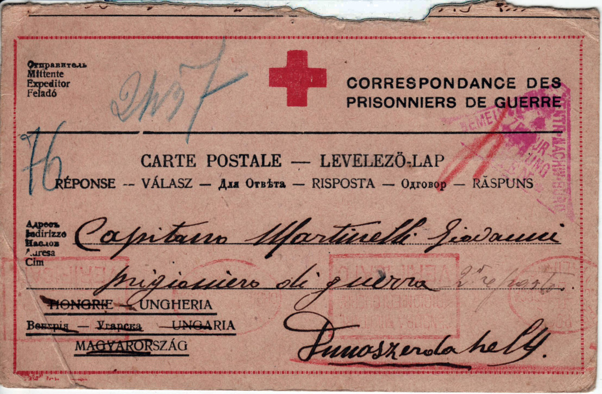
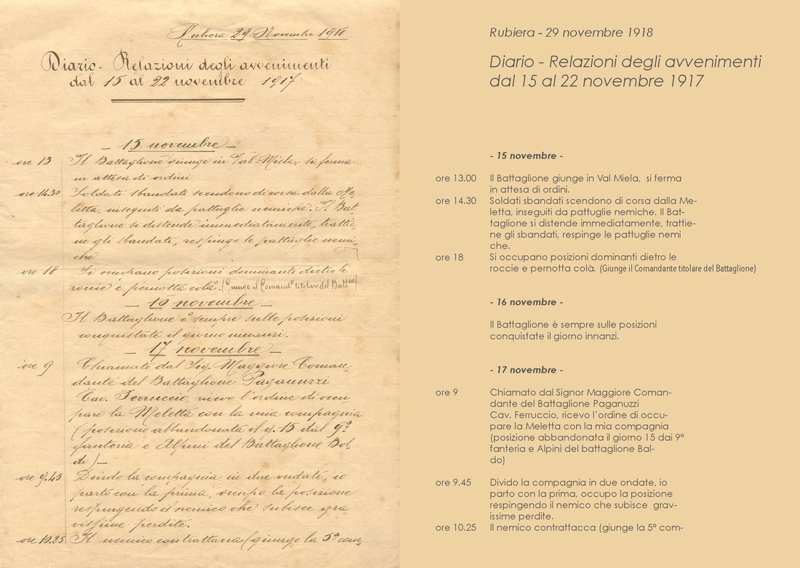

Cartoline
Raccolta di cartoline scritte da Giovanni Martinelli a Lina Masoni tra il 1914 e il 1919. Una storia d’amore d’altri tempi, raccontata attraverso parole scritte di getto all’amata lontana.

Diario di prigionia
Il taccuino della prigionia di Giovanni, con le scansioni, la trascrizione parziale e fotografie del campo.

Diario di guerra
Gli avvenimenti dal 15 al 22 novembre 1917: le pagine originali e il contesto storico sulle Melette.